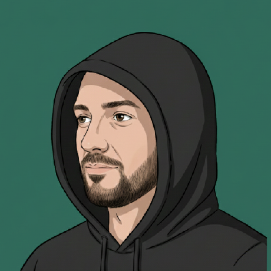

Cyril Moron
ingénieur logiciel·naval group
J'écris du logiciel depuis assez longtemps pour préférer ce qui tient dans la tête à ce qui impressionne en démo. Je travaille aujourd'hui chez Naval Group, entre systèmes au long cours, outillage interne et agents autonomes.
Je m'intéresse aux architectures qu'on peut relire dans deux ans sans grimacer, aux CLIs qu'on répare à la main, et à l'orchestration d'agents IA pensée comme une chaîne Unix : petits outils composables, frontières nettes, comportement prévisible.
écrits
-
MCP, CLI, API directe — comment choisir
Trois manières de brancher un agent sur un système, leurs angles morts, et les critères concrets pour trancher sans céder à la mode.
thèmes
- architecture logicielle
- agents ia
- outillage cli
- automatisation
- linux
- qualité de code
- software minimalism
ailleurs
- github
- github.com/cmoron
- linkedin.com/in/cyril-moron
- cv
- english · français
contact
- cyril.moron [at] gmail.com
- tél
- +33 6 78 81 06 90